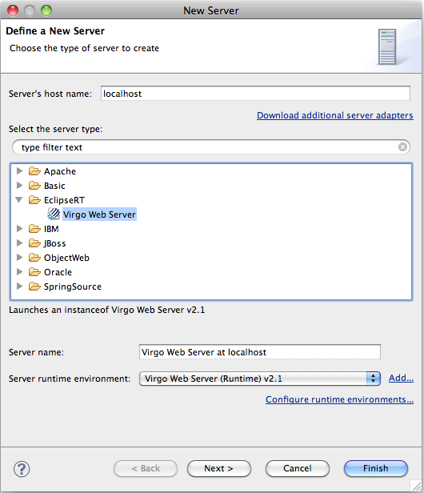
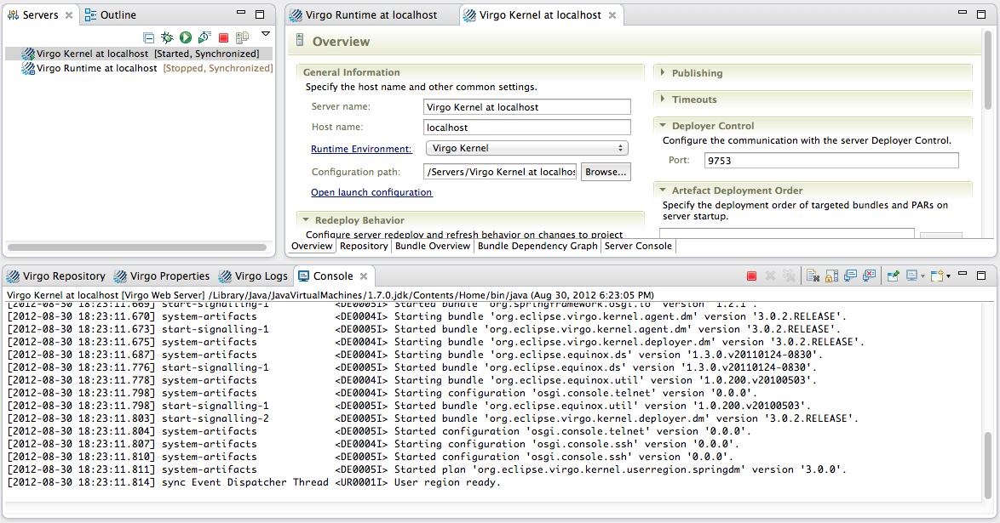

After installing the Tools from the update site outlined in the previous section, you will be able to configure an instance of the VTS inside Eclipse.
To do so bring up the WTP Servers view (i.e., → → → → ). You can now right-click in the view and select " → ". This will bring up a "New Server" dialog. Select "Virgo Tomcat Server v2.1 Server" in the "Virgo" category and click " ".

Within the "New Server Wizard" point to the installation directory of the Virgo Tomcat Server and finish the wizard. After finishing the wizard you should see a Virgo Tomcat Server entry in the Servers view.
To start, stop, and debug the created Virgo Tomcat Server instance use the toolbar or the context menu actions of the Servers view.
